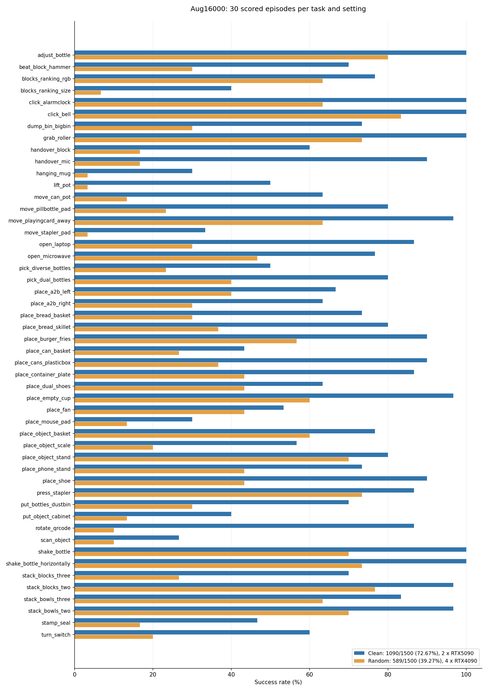

03 / Results
Performance across
50 RoboTwin tasks.
Clean2Clean 72.6% · Clean2Random 39.2% · Combined 55.9%.
04 / Evaluation
AutoHorizon delivers the best result
RoboTwin 2.0 · Clean2Clean and Clean2Random · combined success 55.9%.

Loading verified task results…